Janice Renn, mother of Kim Camm, now wears her daughter’s locket with photos of her grandchildren Brad and Jill. Kim, 35, Brad, 7, and Jill, 5, were murdered in their southern Indiana home on Sept. 28, 2000. Within 72 hours, Kim’s husband, David Camm, was arrested for the murders. Camm was convicted twice, but was acquitted after a third trial on Oct. 24.
He’d already burned his prison jumpsuit and secured a new driver’s license. He’d put back on his finger the wedding ring he wasn’t allowed to wear in prison, the ring his wife gave him before they said he murdered her and their children.
Two juries had convicted him. Then, in October, a third jury acquitted him. Now, he had returned to the house where he grew up, but he still wasn’t free. Camm felt the staring eyes and feared the threats. In his hometown, the 49-year-old was still known as the monster who’d gunned down his family.
As Dr. Phil droned on the television in the living room, there came a knock at the door. Reporters. Camm welcomed them inside, but when they offered handshakes, he opened his arms instead.
“Oh,” he said, smiling. “I’m a hugger.”
•••
The trials of David Camm seemed to never end. Through 13 years, two overturned convictions, and the arrest and conviction of another man, it became one of the most outrageous murder cases in Indiana history.
A month after Camm’s acquittal, his family and the community that was once ready to hang him has been left to wonder — how could a system designed to ensure justice bungle it so badly?
The case began in September 2000, when David Camm’s 35-year-old wife Kim and their children Brad, 7, and Jill, 5, were found murdered in their southern Indiana home. The investigation was flawed from the start.
For years, police neglected to test DNA on a sweatshirt found under Brad’s body. It turned out it belonged to an 11-time convicted felon whose handprint was found at the scene and would eventually admit to being present for the murders.
The prosecutors argued different stories to different juries. In Camm’s first two trials, they claimed he had molested his 5-year-old daughter, but had no evidence to prove it.
Those accusations coupled with testimony about Camm’s alleged affairs, later caused the state supreme court to throw out both convictions. One prosecutor was forced off the case after he signed a book deal.
Camm’s family has advocated for his innocence. His wife’s family has always thought he pulled the trigger. For more than a decade, they sat in the same courtroom, stood side by side in bathroom lines, bowed their heads at the same time to avoid the gore of evidence photos. Now they don’t speak.
By the time the third trial began this August, both sides had given up on the system.
“We know a whole lot more about the injustice system,” says Donald Camm, David Camm’s 83-year-old father. “The word ‘justice,’ I don’t — I don’t use that word no more. It’s gone.”
The Camm family Kim Renn married David Camm in the spring of 1989. They had Brad in 1993, but when Kim was pregnant with Jill, the couple briefly separated while David lived with another woman. In 2000, David said his wife loved him “unconditionally” and his life was perfect.
donald camm, 83, stayed out of the spotlight for most of the last 13 years. During every trial and court hearing, Donald wore an IU jacket David, Kim and the children gave him nearly 20 years ago.

Framed photos of Kim, Brad and Jill are displayed in the entryway of Janice and Frank's home.
murder
At the time of the murders, the Camm family lived in Georgetown, Ind., a quiet town outside New Albany. Kim was a financial analyst. Her husband had recently resigned from the Indiana State Police to take a job with the family business. That summer, he helped coach Brad and Jill’s little league teams.
The children spent their days at Graceland Christian School, where Brad was in second grade and Jill in kindergarten. Twice a week they spent their afternoons with Kim’s parents.
When they weren’t gathered on Lockhart Road, the drive that bears the family name, Camm’s family worshipped at the Georgetown Community Church, a structure and congregation built by his grandfather and led by his uncle. Kim was the treasurer.
On the night of Sept. 28, 2000, Camm played a basketball game at the church while Kim took Jill to dance class and Brad to swim practice. At about 7:30 p.m., Kim drove them home. A couple hours later, Camm left the gym with the rest of the basketball players. At 9:29 p.m., police got a frantic call from a familiar voice.
“Get everybody out here to my house now!” Camm shouted to his former colleagues at his old state police post. “My wife and my kids are dead!”
When officers arrived, they found a distraught Camm at the threshold of a gruesome scene. Kim and Brad were sprawled on the garage floor, bleeding, and Jill was still in the black Ford Bronco, shot in the head. Kim was in her underwear and her shoes were on top of the truck.
Camm told police that when he pulled into the driveway, he saw Kim sprawled on the garage floor beneath the truck’s open passenger door, blood pooling around her head. Frantically searching for his kids, he said he found Jill slumped behind the passenger seat, her face covered by a curtain of blonde hair wet with blood. Beside her, Camm said, Brad was shot in the chest, draped over the back seat like he was trying to get away.
His son felt warm, Camm said, so he climbed over the passenger seat, reached across the center console, pulled Brad out and placed him on the ground, attempting several minutes of CPR. When he couldn’t save his son, Camm ran inside and called his old Indiana State Police post.
Camm’s family started arriving on scene almost immediately.
When they went to tell Camm’s parents, Donald and Sue Camm, they already knew. Camm’s siblings found their mother on the ground, rocking back and forth, clutching photos of Brad and Jill to her chest, crying “my babies” over and over.
In New Albany, Kim’s parents, Frank and Janice Renn, heard the doorbell ring at about 11 p.m. and rustled awake. At the front door were Camm’s uncles with the news. For months after, Janice would jolt awake, swearing she heard the doorbell. She’d drag herself out of bed to check, but the stoop was always empty.
At first, Kim’s parents couldn’t believe their son-in-law was capable of murder. What kind of father could shoot his children?
Test results revealed eight specks of Jill’s blood on his shirt, though, and investigators said the pattern was consistent with blowback from a gunshot.
The medical examiner said Jill had “blunt force trauma” to the genitals, consistent with molestation or a straddle fall that likely occurred within 24 hours of her murder. Janice Renn believed if her granddaughter had been molested, she would have told someone. Unless it was her father.
Then suspicions regarding Camm’s behavior that night raised questions. Why did he call the state police post, his old stomping grounds, instead of 911? Why would he give Brad CPR but never attempt to revive his wife and daughter?
The Sunday after the murders, Camm sat in pews with family and friends and wept. For four hours, they listened to his uncle preach and console. When the service ended, news crews confronted the family outside the church.
Camm’s older brother, Donnie, still remembers how the community convicted him almost immediately after that interview.
“Well, he wasn’t crying,” they would say. “He did it because he wasn’t crying.”
“He had nothing left,” Donnie said. “He was empty. We all were.”
That afternoon, Camm was called in for another round of questioning. He was charged with three counts of first-degree murder.
The funeral was days later. Police wouldn’t let him attend, but they led Camm back to the church the night before. At midnight, 15 officers escorted him to the church, handcuffed and shackled, to see the bodies.
They gave him five minutes to say goodbye.
audio of the Indiana State Police call
The Bronco and Kim's shoes

SUE CAMM, David’s mom, suffered from lupus before the murders, but her body and mind have deteriorated since. Today, she lives in a nursing home in New Albany.
Frank Renn, Kim Camm’s father, was shocked when Camm’s third jury acquitted him. He and his wife have attended nearly every day of each trial the last 13 years.
Janice Renn, Kim Camm’s mother, still wears her daughter’s locket with Brad and Jill’s photo inside. She and her husband have never wavered in their belief that their son-in-law killed their daughter and only grandchildren in 2000.
Sam Lockhart, Camm’s uncle, was one of the first on scene the night of the murders. He’s been the financial support behind Camm’s defense since the beginning.
•••
The doors of the Georgetown Community Church have long since closed. Many in the congregation didn’t want to attend a church associated with the Camms.
The family has gotten used to the stares in dentist waiting rooms, and they no longer give the hostess fake names at restaurants to avoid “Camm, party of three.” They’ve been called a “pack of wolves.”
The community that has ostracized the Camms has openly supported Kim’s family, though the years have worn them down, too. The Renn’s New Albany home is lined with school pictures of Brad with his toothy grin and Jill with her “pumpkin smile” next to Kim’s wedding portraits. David Camm is in those, too.
“I just look over him,” Janice says softly.
They never saw the final images taken of their daughter and grandchildren. In court, they close their eyes as soon as they appear. They don’t want to remember them the way the investigators and detectives do, sprawled in the garage, covered in blood.
“I’ve got memories in my mind right now, as I last saw them, as I knew them, and I don’t want that to change,” Kim’s father Frank said.
The Renns remember Brad as the little boy who liked to dress up as his favorite Disney characters. He could recite the names of every book of the Bible, from Genesis to Revelations. He’d be 20 now, well into his junior year of college. Jill was a tomboy with a full head of shiny blonde hair. She’d be 18, a senior in high school, probably an athlete.
Kim, lady-like and independent, would probably be a top executive by now. She liked to listen more than she talked, her father says, and she solved her own problems. She had an unforgettable laugh.
There’s a local plumbing commercial where a woman laughs just like Kim used to. When the television is on and it echoes through the house, her mother stops.
“It sounds just like her,” Janice says.
They know strangers have spent hours debating who pulled the trigger. In three courtrooms, Frank and Janice have watched Kim, Brad and Jill be reduced to DNA and blood patterns.
“Sometimes,” Janice says, “I just feel like Kim and the kids get lost in all of this.”
Donnie Camm, David Camm’s eldest brother, was the face of the Camm family for many years while they fought to keep his brother David out of prison. His daughters were the same age as Brad and Jill.
cara camm, 21, was in second grade with her cousin Brad at the time of the murders. Now she is a junior studying nursing at IU-Southeast.
Lauren Camm, 17, is a junior at New Albany High School and a starting member of the high school girls’ basketball team. She was a year younger than Jill and still gets harassed at school for being a Camm.
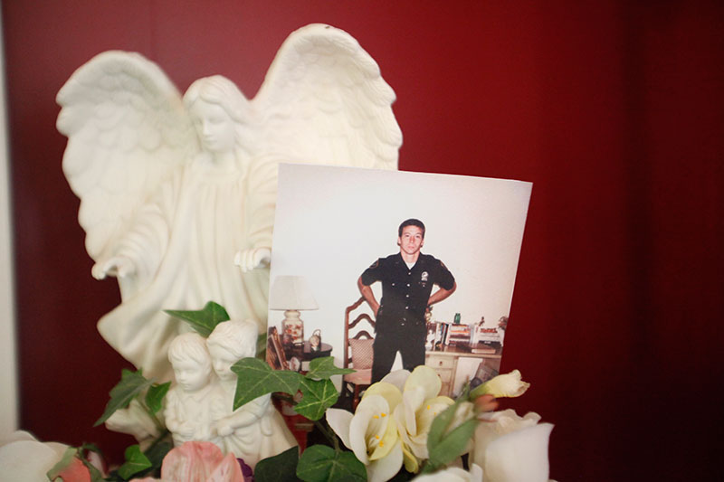
- 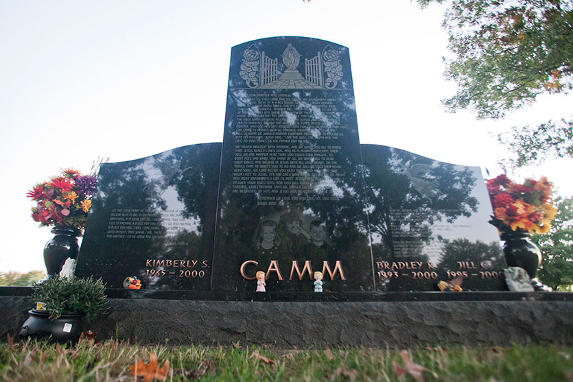
- 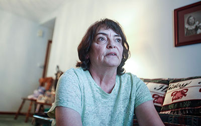
Top A photo of a young Camm from when he was an Indiana State trooper is perched on an angel statue in his parents home in New Albany, Ind. The Camm family said they felt as though they lost Camm, as well as Kim, Brad and Jill, when Camm was in prison for 13 years. left Kim, Brad and Jill are buried at Kraft Graceland Memorial Park in New Albany, Ind. Brad and Jill are buried on the right, and Kim is buried on the left. David's name used to be next to Kim's, but the Renn family asked for it to be removed. They want to try to buy the plot where their daughter is buried, but because of Indiana marriage laws, David has the legal rights.Right Janice in her home in New Albany, Ind. Before the verdict in the third trial, she said she's made her peace with God, regardless of what the jury decides.
Guilty
The threats started just before the first trial.
“If your brother gets out of jail,” a stranger’s voice spat on Donnie’s answering machine, “I’ve got a bullet for you, a bullet for your uncle, a bullet for your attorney and a bullet for him.”
The 11 basketball players from that night, including Camm’s uncle Sam Lockhart, testified they didn’t see Camm leave the gym, nor did they notice any odd behavior or blood on his clothing.
Nearly a dozen women testified to Camm’s character, describing sexual encounters with the man or instances where he propositioned them. The state argued his affairs, coupled with the molestation allegations, were a plausible motive.
Prosecution blood pattern experts said the eight specks of Jill’s blood on Camm’s T-shirt could have only gotten there from gunshot blowback. They theorized Camm left the gym during the only game he sat out, shot his family and returned before anyone noticed he was gone.
Camm testified in his own defense and his attorneys argued Jill’s blood on his shirt must have been transferred when he reached in the truck for Brad.
He was found guilty and sentenced to 195 years in prison in 2002.
Camm appealed, and two years later the Indiana Supreme Court overturned the conviction, noting that the state had not adequately proven his infidelity was motive for murder. They also warned the next trial judge that allowing the molestation accusations could lead to another reversal.
A new county prosecutor refiled charges against Camm, but also announced his office would launch a “fresh eyes investigation.”
A second chance, the Camms thought — finally.
In the boxes of evidence, investigators found unidentified DNA from the sweatshirt. Prosecutors finally tested it nearly five years after the murders and matched it to Charles Boney, an 11-time convicted felon with a foot fetish. He’d been dubbed the “shoe bandit” for assaulting women in Bloomington and stealing their shoes while he was a student at IU in the late 1980s.
Written inside the collar of the Department of Corrections sweatshirt was the word “BACKBONE,” a nickname Boney acquired behind bars. His handprint was found on Kim’s Bronco. He had been released from prison just months before the murders after serving 11 years for holding three female IU students hostage at gunpoint in their Bloomington apartment.
During interrogations, Boney first claimed he didn’t know Camm or his family. He told investigators somebody must’ve planted the sweatshirt at the scene. When detectives asked him to explain his handprint on the passenger side of Kim’s truck, Boney backtracked.
“Your best case scenario,” one investigator told him, “is to be a witness.”
In a written statement, Boney said he met Camm a couple months before the murders at a basketball game and ran into him again at a convenience store. Boney said Camm asked him to buy a gun. Once that deal was made, Camm asked for another. The two arranged to meet the night of Sept. 28, 2000, at Camm’s home. He said he gave Camm the gun wrapped in his sweatshirt.
It was then, Boney wrote, that he heard Camm shoot his wife and children.
Prosecutors argued the men worked together and charged both with the murders. Their trials ran simultaneously, in different courtrooms on opposite sides of the state. The same prosecutor tried both cases, arguing in one courtroom that Camm pulled the trigger and in another courtroom that Boney helped. Boney was convicted and sentenced to 225 years in prison for the murders.
The conspiracy charges were dropped against Camm but not against Boney. In Boney’s trial, the prosecution didn’t have to prove who pulled the trigger, just that both were somehow involved with the murders.
In Camm’s trial, the prosecutors this time argued the man’s motive wasn’t his infidelity, but the molestation. They said Jill had told Kim, and she threatened to leave. Camm was found guilty again, but just like last time, the Indiana Supreme Court overturned the verdict, ruling there was no proof Camm molested his daughter.

charles boney, an 11-time convicted felon, is currently serving 225 years for the murders of Kim, Brad and Jill. He’d been dubbed the “shoe bandit” for assaulting women in Bloomington and stealing their shoes in the late 1980s.

The sweatshirt found at the crime scene
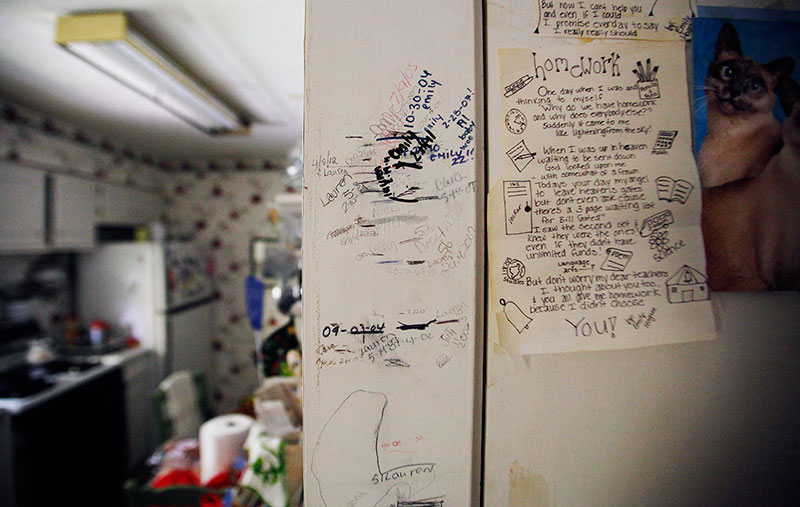
The heights of the Camm grandchildren are recorded on the wall in Donald and Sue's home. Brad and Jill's names are near the bottom in pencil, but are missing from the recent measurements.
Divided
After the second conviction, Cara Camm, David Camm’s niece, told her father Donnie she thought her uncle did it. He punched a hole in the wall.
Looking back, she doesn’t blame him. What she said was hurtful. But it had been nearly six years since her best friends were snatched away. Had they been fighting for nothing?
Even as a little girl, Cara felt the community’s hatred. After the murders, some of her friends weren’t allowed to sleep over anymore. At night, Cara’s younger sister, Lauren, slept with a hammer to make her feel safe. A few substitute teachers even called them out in front of other students.
“Are you related to that guy that killed his family?“
Cara and Lauren are 21 and 17 now, within months of the same ages Brad and Jill would be. In the entryway to their grandparents’ kitchen, the Camm grandchildren have filled the doorframe with dashes and dates, marking their growing heights over the years. Brad and Jill’s names stop climbing after only a few feet.
Their grandmother never recovered after the murders. She had lupus before, but in the years since the murders, her mind and body have disintegrated. The agony of it all literally drove her crazy. Last year, she was moved into a nursing home.
“The only reason my grandparents are still alive is because they want to see Dave get out,” said Cara, Donnie’s eldest daughter. “And I believe wholeheartedly that if for some reason he is convicted again, that they just won’t make it.”
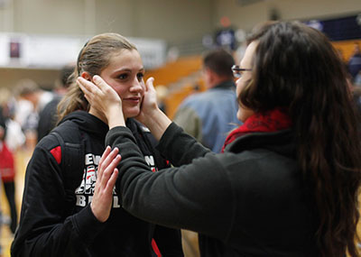
Cara Camm congratulates Lauren Camm on a great game at the New Albany High School women's basketball season opener.
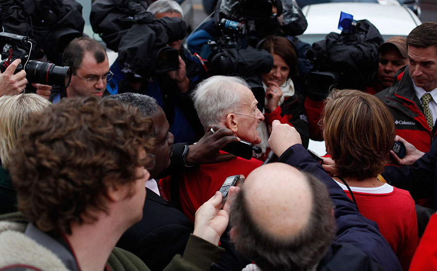
- 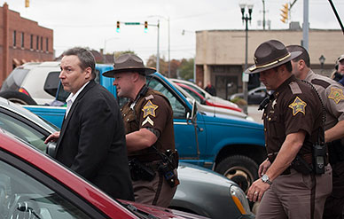
- 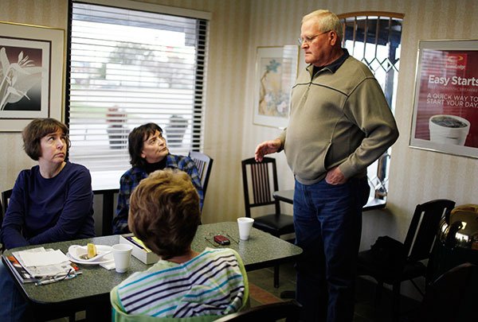
Top Donald and Julie are surrounded by media after Camm was found not guilty on Oct. 24 in Lebanon. left For the first time outside prison without handcuffs in 13 years, David Camm walks out of the Boone County Courthouse to an officer's SUV. He was accompanied by multiple officers after Camm and his family received death threats throughout the three trials. right Frank Renn, Kim Camm's father, relays information from the prosecution to Carol Gilmore, Janice's sister, and Willa Banet, a family friend, in the Econolodge in Lebanon, Ind. while they wait for a verdict in the third trial.
13
The third trial began this August at the Boone County courthouse, two hours north of New Albany. Once again, both families filed into rows for the testimony and evidence they’d heard twice before.
In accordance with the first two appeals, the judge prohibited any testimony about Camm’s affairs or the molestation allegations. He wouldn’t allow the defense to mention Boney’s foot fetish either.
Prosecutors focused on Jill’s blood on Camm’s T-shirt, while the defense argued the basketball players corroborating the man’s alibi had never wavered. Camm’s arrest, the lawyer said, was the result of a botched investigation and a prosecutor with tunnel vision.
On the day Boney testified, officers escorted the man into the courtroom, his hands and ankles shackled against his DOC jumpsuit.
As Camm entered the room, the two men locked eyes and didn’t blink.
The prosecutor asked Boney if he could point out David Camm for the jury.
“Mr. Camm is sitting right there,” Boney said, “in the suit, blue tie, looking very dapper.”
He didn’t flinch. Camm clenched his jaw.
Boney testified that as he handed Camm the gun at his home that night in 2000, Kim pulled into the family’s garage. That’s when Camm followed her up the driveway and the couple started arguing.
He said he heard a “pop!” then a little boy yelling “Daddy!” followed by another “pop!,” and then a third “pop!”
Boney said Camm emerged from the garage, turned the gun on him and tried to shoot, but it jammed. Camm ran toward the house, Boney said, and he chased him into the garage, but Camm disappeared inside. In the pursuit, Boney ran and tripped over Kim’s shoes, he testified, and placed them on top of the truck so nobody else would do the same.
He said he did not touch anyone and fled the scene.
As the trial wound down, an independent forensic scientist from the Netherlands explained how Boney’s touch DNA — a new science — was found on the clothing Kim and Jill wore that night.
On a slow day toward the end of the trial, Donald Camm, David Camm’s father, convinced his family to let him make the two-hour trip north. His declining health forced him to wear an oxygen tank.
When Camm walked into the courtroom, he teared up as soon as he saw his elderly father with the clear tubes in his nose.
That afternoon, the bailiff let the old man spend a few minutes with Camm, handcuff-free. In a back room, they hugged. It was the first time in years Donald had been able to touch his son.
The day of closing arguments, the courtroom was full. Prosecutor Todd Meyer called Camm a murderer and showed the jurors photos of Kim, Brad and Jill.
“You have to wonder where they’d be today,” he said.
Defense attorney Stacy Uliana reminded the jury of the 18 cuts and bruises that had been found on Kim’s body.
“She fought long and she fought hard,” Uliana said. “She fought for her children.”
The courtroom was silent.
“Charles Boney can take away his family,” she said. “The State of Indiana can take away his freedom. But they can’t take away his truth and knowledge.”
She turned to face Camm, who fought back tears.
“And you did everything in your power that night to save your family.”
Quiet sobs sounded from the gallery.
•••
The kitchen staff at Brenda’s Cubbard, a diner across the street from the Boone County Courthouse, knew first there was a verdict. It was Oct. 24, and the courthouse called just after 9:30 a.m. to cancel the jurors’ lunch orders. They’d only deliberated for 10 hours.
The restaurant staff too waited anxiously for a verdict.
In the crowded courtroom, the foreman handed the large manila envelope to the bailiff, who brought it to the bench where the judge pulled out the answer.
Not guilty. Not guilty. Not guilty.
Camm sobbed. He stood up and sat down again, praised God and thanked the jury. As they left the courtroom, some jurors wiped away tears of their own.
Kim’s parents sat frozen in their seats. Her father didn’t move for 20 minutes.
When Camm’s lawyers and family left the building, they were bombarded by television news cameras. How did they feel? What did Camm say? What would they do next?
Coffee, Donald Camm said with a grin. He just wanted some hot coffee.
As police swept David Camm away in a sheriff’s department SUV armed by guards with assault rifles, his family shuffled across the street into Brenda’s Cubbard to escape the biting wind. They’d meet up with him later, where it was safe.
With his mug in front of him, Donald, his family and the restaurant staff joined hands, cried and prayed.
“Amen,” someone said, “and pass the potatoes.”
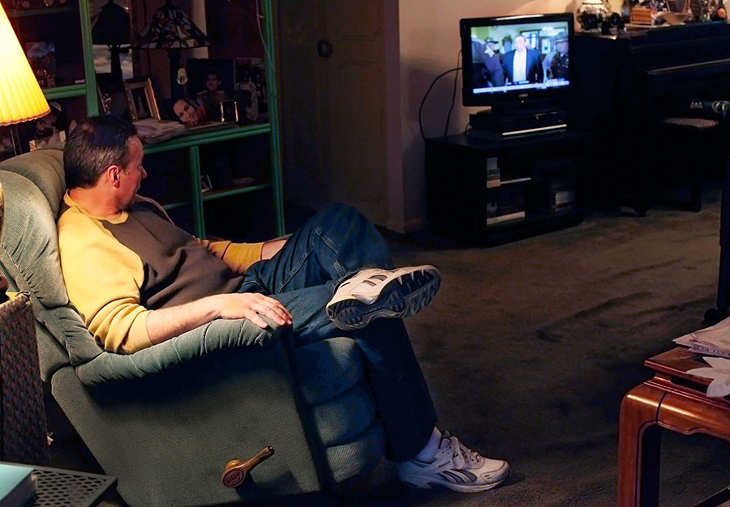
- 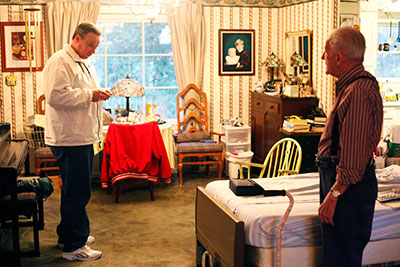
- 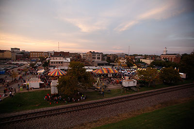
Top David Camm, now a free man, watches himself on WDRB Lousiville's 4 p.m. news broadcast at his father's house. Donald was interviewed for the segment in the same room hours earlier. left David visits his dad. "I can’t explain what I feel,” Donald said. “I don’t know the words. But just like when he pulled in here today, there’s just some kind of a great feeling goes through me." Right New Albany, Ind. is pictured from the Ohio River bank in October 2013. Many in the Louisville suburb believe Camm is guilty and are angry he had three trials that nearly bankrupt the county.
home
One juror has said publicly that the jury thinks David Camm is innocent.
They were skeptical from the start — the defense’s theory that prosecutors had tunnel vision in 2000 seemed highly likely, she said.
“I think they had their conclusion, and then they reached for the evidence to support that conclusion,” the female juror told 48 Hours.
She told CBS the jury hardly discussed the eight specks of blood on David’s T-shirt. That evidence was central to the prosecution’s case, but the jury found it irrelevant. He was playing basketball, she said.
“I sense that the state police had a hard time admitting that they had made a mistake,” she said.
•••
The Camm case will shape Floyd County for years to come.
The bill for Camm’s three trials has climbed to an estimated $4.5 million, buckling the financially strapped county. At council meetings, officials have discussed layoffs as a possible solution for their budget crisis, generating angry feedback from county employees.
For years, the community has publicly expressed their frustration with the Camm trials. Why should a convicted killer get another chance? One editorial written seven years ago rallied against defense lawyers for damaging the county with the costs of their repeated appeals.
A month after the not-guilty verdict, Bill Lamb, the WDRB president and general manager who wrote that editorial, published another one — this time apologizing to David Camm.
“I wondered when Indiana taxpayers would get to stop paying fortunes in trial expenses, and why any accused killer could possibly deserve so many ‘do-overs,’” Lamb wrote. “Well, now we have the answer: When they’re not guilty.”
A commenter responded online the day before Thanksgiving: “I hope Camm dies while choking on his turkey tomorrow. Murderer.”
•••
The jury’s verdict hasn’t changed Kim’s parents’ minds. They’ll always believe David Camm killed their eldest daughter and only grandchildren.
“I had already turned it over to God,” Janice says.
For 13 years, most in the community had been on their side, and the Renns were still getting hugs and prayers from strangers at the store. But Camm and his family had hinted at a hope for reconciliation with the Renns.
“That’s not going to happen,” Frank says. “He’s not fooling nobody, I don’t think.”
There are still legal battles to fight over insurance money, and every time Camm posts on Facebook or makes an announcement online, the TV stations call the Renns for a comment.
“They want to know what we think,” Janice says. “There isn’t anything to think.”
Last week, she visited the cemetery where Kim, Brad and Jill are buried. They rest at the foot of a towering dark marble memorial. There’s room for four burial plots, but David Camm’s name was removed from the gravestone long ago. The Renns didn’t want him there.
Janice knows Camm has full rights to the plot and assumes he’ll put his nameplate back on the gravestone eventually. She just keeps reminding herself that it’s out of their control now.
“We all have to meet our maker someday.”
•••
David Camm doesn’t talk about his memories. They’re all he has left.
But when he’s back in his parents’ home, Camm is surrounded by reminders of his past — Brad and Jill’s baby photos, the IU jacket Kim and the children gave his dad nearly 20 years ago, scattered newspaper clippings about the meaning of justice.
In the month since his acquittal, he has tried to patch together a new life.
After the police handed him over to his family at an interstate rest stop, one of the first things Camm did was visit his mother. He hadn’t seen her in nearly four years. She was even worse than he expected.
When he talks about her ailing health or hears his father discuss the stress of the trials, the 49-year-old man tears up.
He’s visited the place where Kim, Brad and Jill are buried and seen for the first time the memorial that no longer bears his nameplate. Camm’s brother said he will put it back eventually. Someday, he’ll be buried there.
CBS flew him to New York City for his 48 Hours interview. In the airport, one woman yelled to him, “Congratulations!” A random man patted him on the back and said, “God bless you.”
“I can’t live my life in a box. I haven’t done anything wrong,” Camm says. “I’m going to go about my business, and I guess people are just going to have to get used to that.”
After a month of wearing his wedding ring, Camm decided to take it off. Like many decisions since his acquittal, he wanted it to be his.
Camm has taken a job as a caseworker for the advocacy nonprofit Investigating Innocence. He’s studied the wrongful convictions of people across the country. Camm says those who’ve never dealt with the criminal justice system can’t truly understand it.
“When you interject people into those positions, they have agenda, they have political ambitions, they are motivated by money, fame, arrogance, ego,” Camm says. “That’s when things begin to fail, because of a specific person’s own agenda versus them doing the job they’re supposed to. Especially at the trial court level.”
"Well, the trial court level in southern Indiana," Camm says.
Like in his trials, Camm believes it’s ultimately up to the judge to ensure fairness in the courtroom.
“But when you have a judge that basically is an extension of the prosecutor, then innocent people are going to go to prison,” Camm says. “It happens all the time. We see it all the time.”
Two weeks ago, the Camms sat down for Thanksgiving dinner. They’d picked Camm’s mother up from the nursing home. Donald cut the turkey and offered a toast to freedom.
For the first time in 13 years, David Camm sat among them and raised his glass.

The Camm-Lockhart family says a prayer at Brenda's Cubbard in Lebanon after hearing that Camm was found not guilty.The waitresses and restaurant staff joined in support after serving the family lunch throughout the trial.